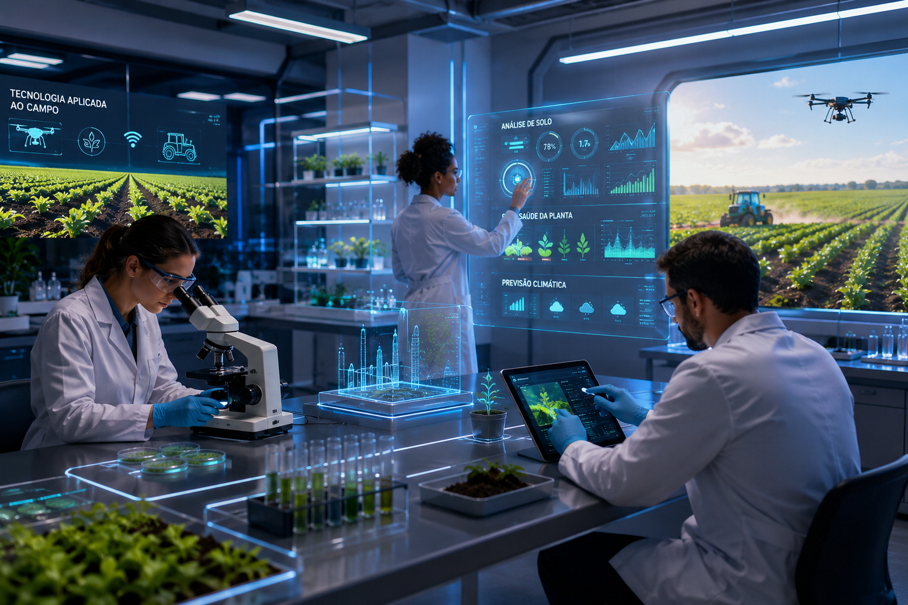

Tecnologia agrícola reforça papel do Brasil
A agricultura sustentável ganha espaço no debate global em um momento de pressão sobre custos, segurança alimentar, energia e mudanças climáticas.
Segundo Luciana Gorab, especialista em Planejamento Estratégico de Vendas, esse cenário coloca o Brasil em posição de destaque por unir produtividade, inovação e capacidade de adaptação no campo.
Enquanto temas como inteligência artificial, guerras comerciais e a nova corrida energética dominam parte das discussões internacionais, uma transformação menos ruidosa vem fortalecendo o papel brasileiro na inovação agrícola. O avanço de tecnologias baseadas no uso de microrganismos nas lavouras mostra como o país pode contribuir para reduzir a dependência de fertilizantes químicos, um dos insumos mais caros e sensíveis da produção de alimentos.

O trabalho da microbiologista brasileira Mariangela Hungria ganhou projeção internacional após décadas dedicadas ao desenvolvimento de bactérias capazes de substituir parte dos fertilizantes industriais. Na prática, esses microrganismos capturam nitrogênio diretamente do ar e o transferem para as plantas, ampliando a eficiência produtiva e reduzindo a necessidade de insumos nitrogenados.
Peso Estratégico e Reconhecimento Internacional
Esse ponto tem peso estratégico. Fertilizantes nitrogenados dependem fortemente de gás natural, recurso sujeito a oscilações de preço, tensões geopolíticas e aumento dos custos energéticos. Nesse contexto, a tecnologia brasileira passa a ser vista como uma alternativa que combina ganhos de produtividade, sustentabilidade, redução de custos e aplicação tropical em escala global.
O reconhecimento internacional veio com o World Food Prize, frequentemente chamado de Nobel da Agricultura. Mais do que uma premiação, o destaque reforça uma mudança de percepção sobre o Brasil, que deixa de ser visto apenas como exportador de commodities e passa a ocupar espaço como protagonista em tecnologia agrícola sustentável.
“Num planeta preocupado com segurança alimentar, inflação e mudanças climáticas, talvez uma das soluções mais sofisticadas do século esteja justamente onde o Brasil sempre foi forte: no campo. Porque, às vezes, o verdadeiro ouro não está no solo. Está na inteligência de quem aprende a trabalhar com ele”, conclui.
Quais os principais benefícios da Inteligência Artificial no campo?
A agricultura está passando por diversas transformações à medida que vai se modernizando e adotando inovações tecnológicas. A Inteligência Artificial (IA) faz parte desse movimento e promete revolucionar o setor. Ela permite a otimização do uso de recursos no campo, além de permitir a automatização de processos complexos, contribuindo para o aumento da eficiência, produtividade e sustentabilidade das operações.
Sabemos que atualmente, a agricultura enfrenta inúmeros desafios e entre eles estão lidar com recursos naturais finitos, mudanças climáticas e a necessidade de aumentar a capacidade produtiva. Devido a isso, contar com inovações como a Inteligência Artificial é uma peça-chave para se destacar nesse mercado e continuar expandindo os negócios. Diante desses desafios, a necessidade de inovações tecnológicas na agricultura nunca foi tão urgente. A Inteligência Artificial se apresenta como uma solução poderosa para enfrentar esses problemas, oferecendo ferramentas que permitem um uso mais eficiente dos recursos, melhoram a gestão agrícola e aumentam a resiliência das práticas agrícolas frente às adversidades.
Pensando nisso, preparamos este conteúdo para falar sobre como o futuro da agricultura pode ser mais produtivo, sustentável e resiliente com a inclusão da Inteligência Artificial, acompanhe:
Otimização de recursos
Sistemas de irrigação inteligentes e sensores monitoram as condições do solo e plantas, ajustando a água de acordo com as necessidades reais e reduzindo o desperdício.
Monitoramento de culturas
Drones com câmeras de sensores RGB e multiespectrais capturam imagens analisadas por algoritmos de IA para detectar pragas, doenças, falhas de plantio e direcionar replantios precisos.
Previsibilidade e gestão de riscos
Análise profunda de dados climáticos e históricos de produção para prever o rendimento de colheitas, permitindo que produtores se preparem para eventos climáticos extremos.
Automação
Tratores e maquinários autônomos equipados com pilotos automáticos e navegação GPS efetuam plantio, pulverização e colheitas milimétricas de forma otimizada.
Melhoria da qualidade dos produtos
A aplicação seletiva em taxa variável reduz o estresse fitossanitário e promove a rastreabilidade ponta a ponta em cada etapa da cadeia logística de suprimentos.
Sustentabilidade
Minimiza o desperdício de insumos agrícolas através da aplicação de precisão e localizada de água e defensivos, reduzindo impactos ambientais severos.


Interação com o Leitor
Deixe sua opinião ou dúvidas sobre a ascensão da tecnologia nas lavouras brasileiras.